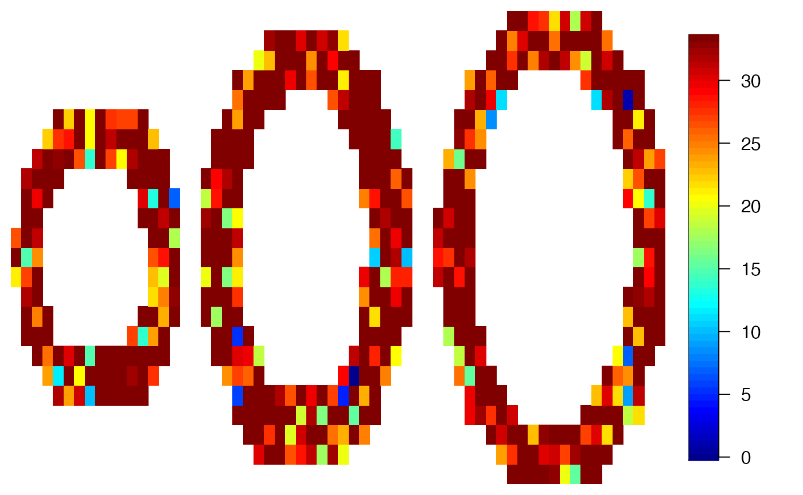
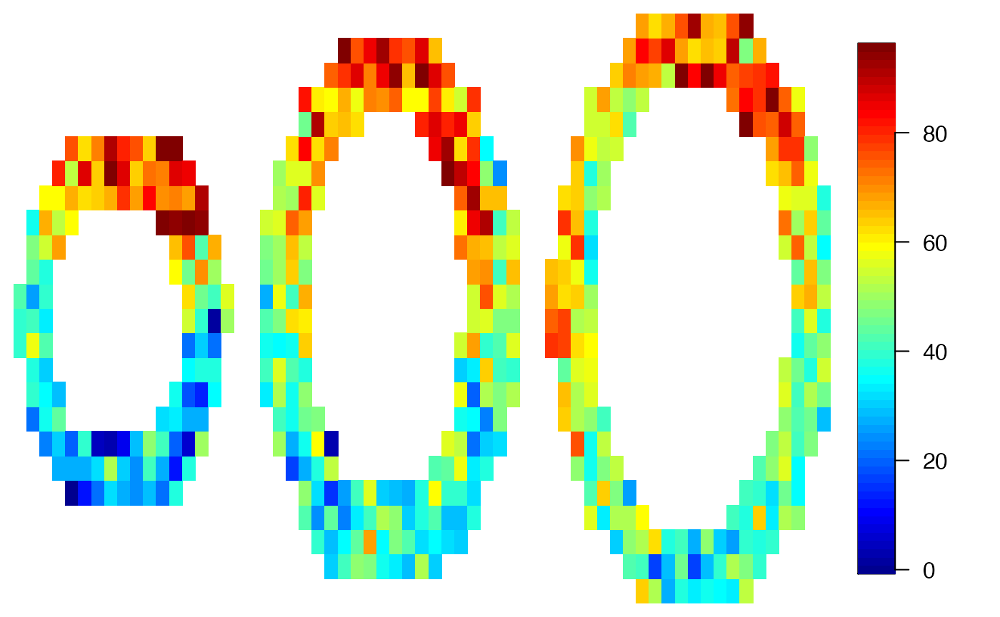
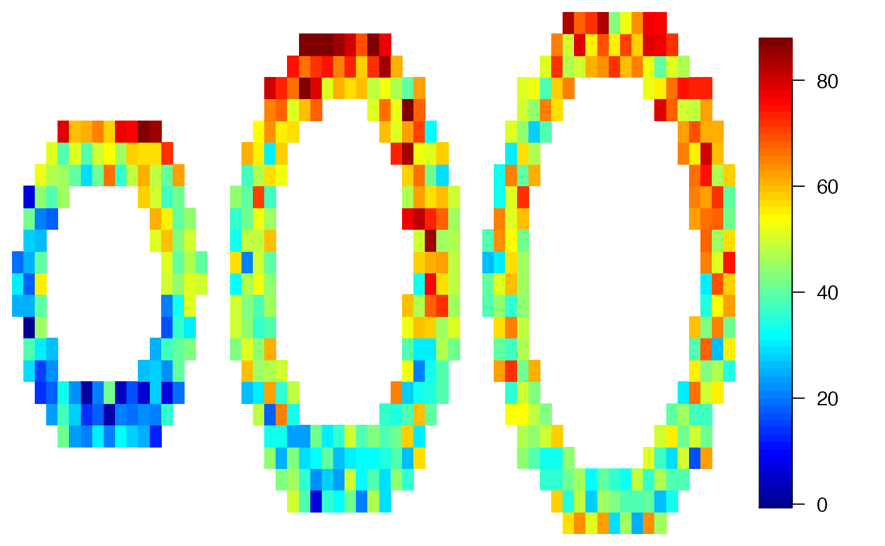
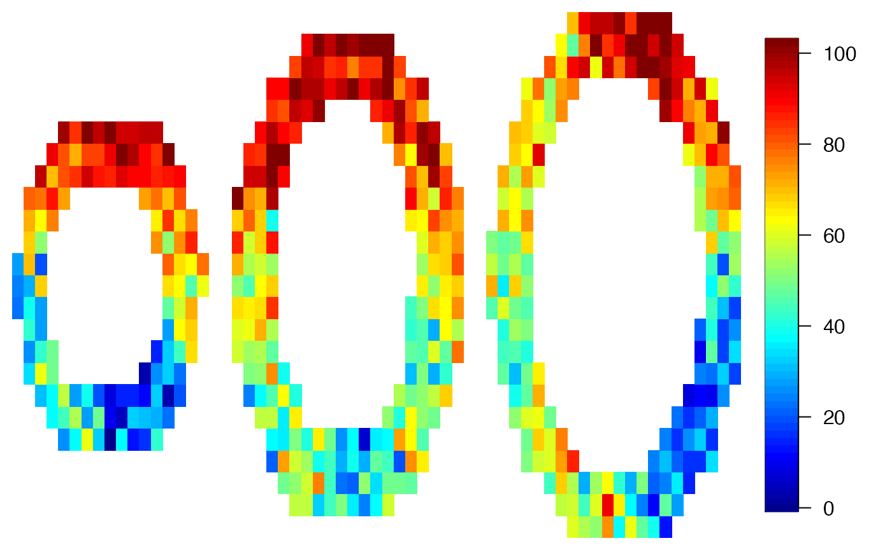
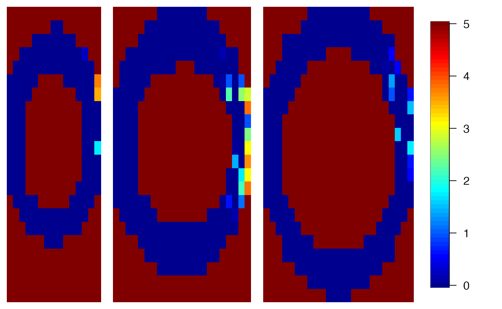
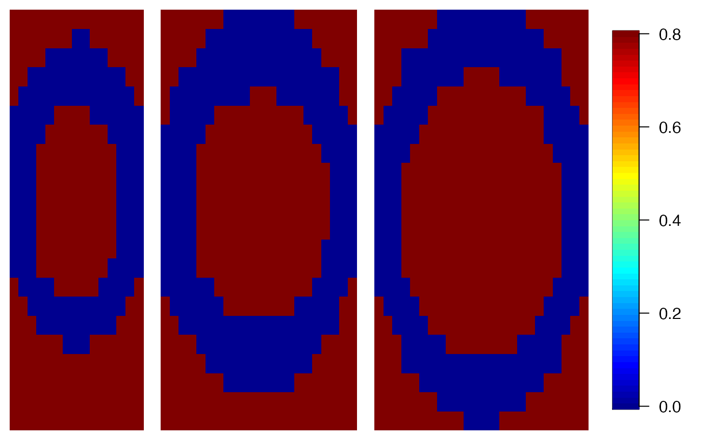
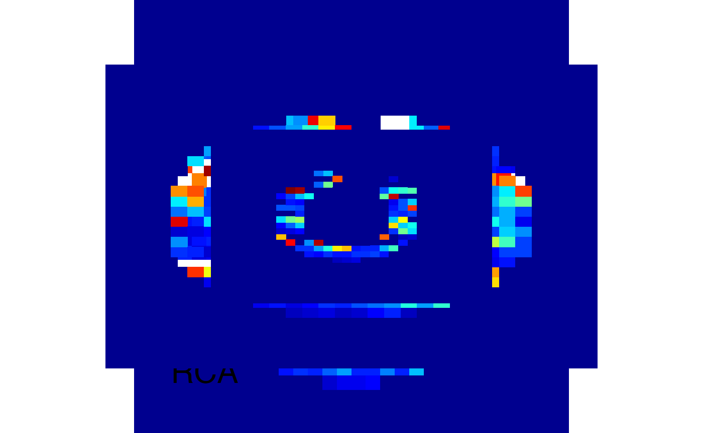
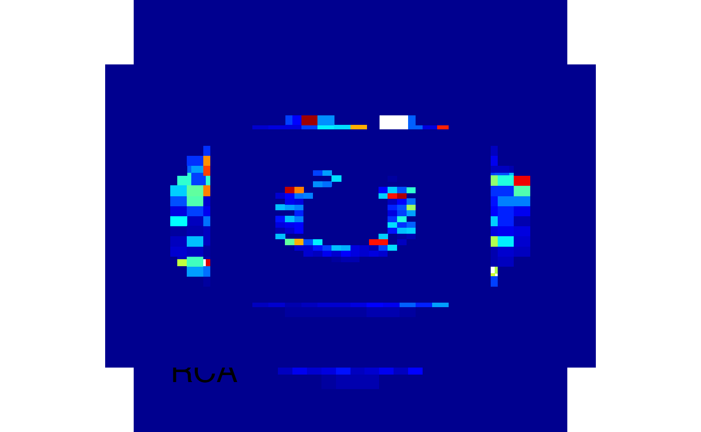

cmr-usage.RmdWe use a simulated data set and add random white noise.
data(cmrsim)
for (i in 1:dim(cmrdata_sim)[1])
for (j in 1:dim(cmrdata_sim)[2])
for (k in 1:3)
if (!is.na(cmrdata_sim[i,j,k,1]))
cmrdata_sim[i,j,k,]=cmrdata_sim[i,j,k,]+rnorm(30,0,sqrt(30))Let’s have a look on the data:
imageMBF(cmrdata_sim[,,,1])
imageMBF(cmrdata_sim[,,,10])
imageMBF(cmrdata_sim[,,,20])
imageMBF(cmrdata_sim[,,,30])
print(system.time({local=cmr(cmrdata_sim,input_sim,method="local",cores=4)}))
#> User System verstrichen
#> 2666.420 10.422 1640.173
imageMBF(local$mbf,zlim=c(0,5))
imageMBF(local$ci,zlim=c(0,.8))
print(system.time({spatial=cmr(cmrdata_sim,input_sim,method="spatial",cores=4)}))
#> User System verstrichen
#> 183.244 23.718 150.940
pseudobullseye(spatial$mbf,lim=c(0,5))
pseudobullseye(spatial$ci,lim=c(0,5))
pseudobullseye(maxresp_sim,lim=c(0,5))